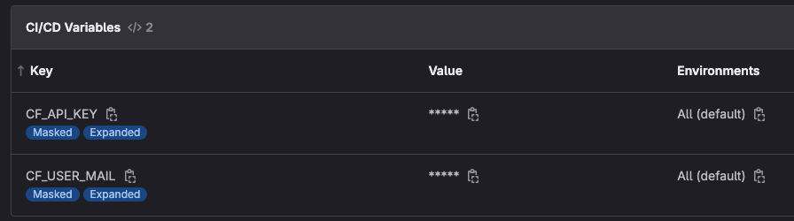

Sécurisation des secrets
Estimated time to read: 5 minutes
Pour sécuriser nos secrets, nous allons utiliser external-secrets pour simplifier la délégation de la gestion des secrets à un outil tiers tel que GitLab, HashiCorp Vault...
Installation
external-secrets fournit un Helm chart pour une installation simple
On ajoute donc le repo pour external-secrets :
et on installe dans un namespace dédié 🚀
helm install external-secrets external-secrets/external-secrets -n external-secrets --create-namespace --set installCRDs=true
external-secrets instancie plusieurs composants, on peut les lister:
NAME READY STATUS RESTARTS AGE
pod/external-secrets-5f45b6f844-27fmq 1/1 Running 0 2m9s
pod/external-secrets-cert-controller-9795887f6-8mssr 1/1 Running 0 2m9s
pod/external-secrets-webhook-6f4789ccf-qmpkn 1/1 Running 0 2m9s
NAME TYPE CLUSTER-IP EXTERNAL-IP PORT(S) AGE
service/external-secrets-webhook ClusterIP 10.3.175.44 <none> 443/TCP 2m11s
NAME READY UP-TO-DATE AVAILABLE AGE
deployment.apps/external-secrets 1/1 1 1 2m10s
deployment.apps/external-secrets-cert-controller 1/1 1 1 2m10s
deployment.apps/external-secrets-webhook 1/1 1 1 2m10s
NAME DESIRED CURRENT READY AGE
replicaset.apps/external-secrets-5f45b6f844 1 1 1 2m9s
replicaset.apps/external-secrets-cert-controller-9795887f6 1 1 1 2m9s
replicaset.apps/external-secrets-webhook-6f4789ccf 1 1 1 2m9s
Tout est prêt !
Configuration
Pour permettre à external-secrets de gérer les secrets, il est nécessaire de créer un SecretStore. Celui-ci fera le lien entre le cluster et l'outil hébergeant les secrets.
Pour faire simple dans ce workshop, on va faire avec GitLab pour stocker nos données sensibles via l'utilisation des variables de CICD. C'est simple à mettre en oeuvre mais introduit une faiblesse coté sécurité car nécessite quand même d'avoir un secret coté Kubernetes, pour stocker la clé d'API pour se connecter à GitLab.
D'autres solutions sont possibles...
external-secrets fournit plusieurs connecteurs possibles. Le plus complet semble être celui d'HashiCorp Vault car il n'introduit pas de besoin de clé ou de credentials pour s'intégrer dans le cluster.
On a déjà préparé les variables dans le projet GitLab (via le menu Settings -> CICD -> Variables):

Créons le secret de connexion:
GITLAB_TOKEN est déjà configuré pour vous
On est sympa, c'est déjà fait grâce au script exécuté au début du workshop. Si vous avez changer de terminal, il faut refaire la commande suivante:
Maintenant on peut créer un ClusterSecretStore pour faire le lien entre GitLab et le cluster.
apiVersion: external-secrets.io/v1beta1
kind: ClusterSecretStore
metadata:
name: gitlab-cluster-secret-store
namespace: external-secrets
spec:
provider:
# provider type: gitlab
gitlab: # (1)
url: https://gitlab.com/ # (2)
auth:
SecretRef:
accessToken:
name: gitlab-token
key: token
namespace: external-secrets
projectID: "53147568" # (3)
- 👽 Le type du provider
- 🔗 L'URL de votre GitLab, pas forcément gitlab.com
- 📦 L'ID du projet qui héberge les données sensibles
Alternative SecretStore
Il est possible d'utiliser un SecretStore pour restreindre à un namespace, si vous voulez limiter l'accessibilité/utilisation de vos secrets.
On peut déployer notre ClusterSecretStore:
et vérifier que le connexion à GitLab est opérationnelle:
ClusterSecretStore est valide
Configuration d'un ExternalSecret
Nos secrets stockés dans GitLab, il faut créer désormais créer un ExternalSecret qui va rappatrier dans notre cluster le secret stocké dans GitLab.
On va faire le test sur external-dns pour externaliser notre clé d'API et username Cloudflare dans GitLab:
Les secrets sont créés
On peut vérifier que nos secrets sont valides (ie synchronizés à l'état SecretSynced):
Success
Automatiquement external-secrets a généré des secrets pour nous:
Les nouveaux secrets sont générés
Configuration de external-dns pour utiliser les nouveaux secrets
Maintenant que l'on a nos nouveaux secrets, on peut mettre à jour notre Deployment d'external-dns pour qu'il les utilise plutôt que les anciens.
On change donc la référence des secrets dans le Deployment:
- name: CF_API_TOKEN
valueFrom:
secretKeyRef:
name: external-cloudflare-api-token
key: api-key
- name: CF_API_EMAIL
valueFrom:
secretKeyRef:
name: external-cloudflare-user-mail
key: user-mail
On aura plus besoin de nos anciens secrets, autant les supprimer:
Et on met à jour external-dns pour utiliser les nouveaux
Après quelques secondes, on voit qu'un nouveau pod a été créé et fonctionne:
external-dns est recréé et opérationnel
et on vérifie que la connexion avec Cloudflare est toujours ok:
kubectl logs -f $(kubectl get pods -l "app.kubernetes.io/name=external-dns" -n external-dns | grep external-dns-cloudflare | cut -d' ' -f1) -n external-dns
external-dns est bien connecté à Cloudflare
Le chef de brigade sécurité est content, mais il sent qu'on a du répondant 😎, il nous impose alors encore de nouvelles contraintes : il ne vaut que des ingrédients contrôlés en amont et veut favoriser la filière locale plutot que la grande distribution... 🛒
Ok, challenge accepted !! 💪 Montrons-lui comment faire ➡️